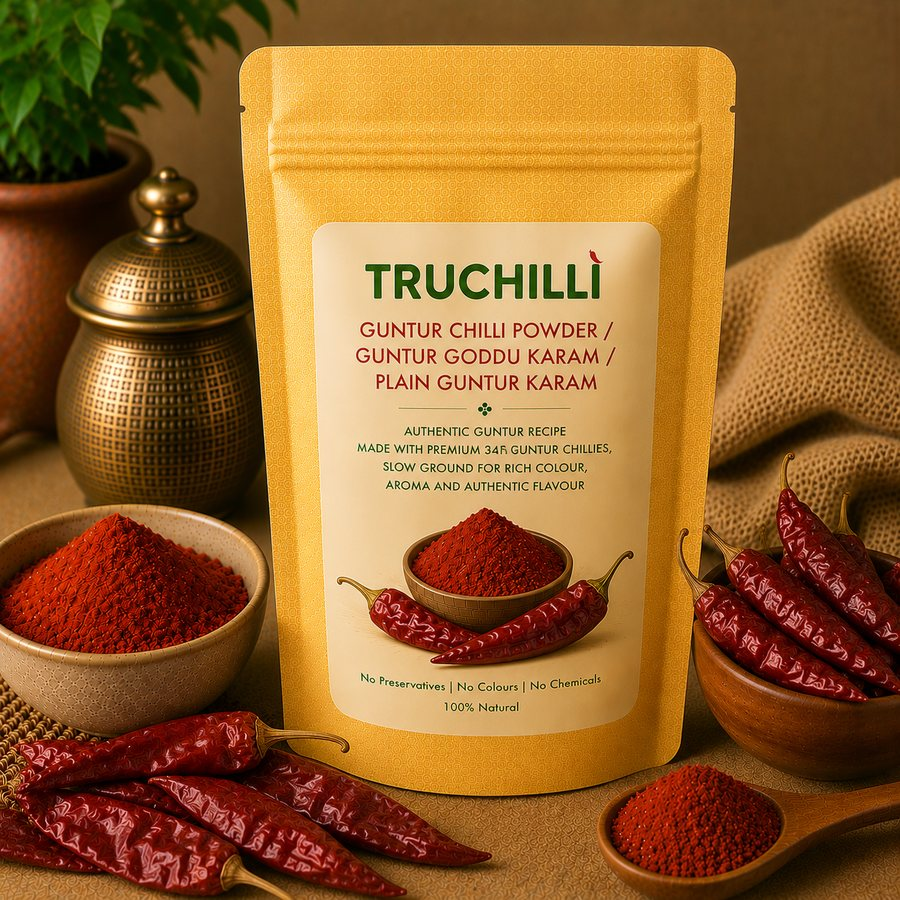

గుంటూరు మిర్చి · From the Guntur Mirchi
Guntur chilli powders, slow-ground the traditional way.
Sun-dried chillies from Guntur farmers, karam podis, homemade masalas and turmeric, ground in small batches so nothing is lost to heat. No colours, no preservatives, no chemicals.
- 0Natural products
- 0Chilli powders & podis
- 100%Natural, nothing added

🪔 Limited-time offers
Festive Offers
Explore
Shop by category
The heart of Truchilli
The Guntur chilli powders
Pachi karam, kura karam, pachalla karam and Byadagi: four powders, one Guntur Mirchi Yard.
The Pantry
All products
Why Truchilli?
Quality before quantity.
పరిమాణం కంటే నాణ్యతే ముందు.
Sun-dried · Slow-ground · Nothing added
ఎండలో ఆరబెట్టి · నెమ్మదిగా విసిరి · ఏమీ కలపకుండా
Truchilli comes from The Guntur Mirchi, a family business on Mirchi Yard Road in Guntur, home to Asia's largest chilli market. We buy our chillies directly from farmers, sun-dry them and grind them ourselves.
Even with large machines, we grind in small batches at a slow pace so the chillies never heat up. That is what keeps the natural oils, the deep red colour and the aroma that a shop-bought powder loses.
Every pack, from Guntur pachi karam and karam podis to garam masala, turmeric and gongura pickle, is made the way it is made at home: 100% natural, with no artificial colours, preservatives or chemicals.
ట్రూచిల్లీ గుంటూరు మిర్చి యార్డ్ రోడ్డులోని “ది గుంటూరు మిర్చి” కుటుంబ వ్యాపారం నుంచి వచ్చింది. ఆసియాలోనే అతిపెద్ద మిర్చి మార్కెట్ ఉన్న గుంటూరులో, మేము రైతుల దగ్గరే నేరుగా మిర్చి కొని, ఎండలో ఆరబెట్టి, మేమే విసురుతాం.
పెద్ద యంత్రాలు ఉన్నా, మిర్చి వేడెక్కకుండా చిన్న చిన్న బ్యాచ్లుగా నెమ్మదిగా విసురుతాం. అందుకే సహజమైన నూనెలు, ఎర్రని రంగు, ఘుమఘుమలాడే వాసన అలాగే ఉంటాయి.
గుంటూరు పచ్చి కారం, కారం పొడులు, గరం మసాలా, పసుపు, గోంగూర పచ్చడి వరకు ప్రతి ప్యాకెట్ను ఇంట్లో చేసినట్టే చేస్తాం: 100% సహజం, కృత్రిమ రంగులు, ప్రిజర్వేటివ్లు, రసాయనాలు లేకుండా.
Made with care in Guntur. Taste the difference once, and you will not go back.గుంటూరులో శ్రద్ధగా తయారు చేశాం. ఒక్కసారి రుచి చూడండి, మళ్ళీ వెనక్కి వెళ్ళరు.
What goes into our packsమా ప్యాకెట్లలో ఏముంది
The chilliesమిర్చి
Roasted for the karam podisకారం పొడుల కోసం వేయించినవి
Whole spices, ground slowనెమ్మదిగా విసిరిన మసాలా దినుసులు
Sun-dried, roasted and ground at low temperature so the natural oils, colour and aroma stay in the pack.ఎండలో ఆరబెట్టి, వేయించి, తక్కువ వేడిలో విసరడం వల్ల సహజ నూనెలు, రంగు, వాసన ప్యాకెట్లోనే ఉంటాయి.
“Prepared with the same care as homemade.”
“ఇంట్లో చేసినంత శ్రద్ధగా తయారు చేసినవి.”
Restaurants, hotels & bulk orders
2 kg and 3 kg packs are on the site. For larger quantities, resellers or gifting, tell us what you need and we'll quote the same day.
Good to know
Frequently asked questions
How much is shipping and how long does it take?
Shipping is ₹99 up to 1 kg, ₹149 up to 2 kg and ₹179 up to 3 kg. Orders above 3 kg ship free. Andhra Pradesh and Telangana take 3–6 business days, the rest of India 5–9. For international orders, message us on WhatsApp.
How hot are the chilli powders?
Guntur pachi karam and pachalla karam are the hottest, kura karam is medium with roasted spices, and Byadagi is mild with a deep red colour. Use the “Mild only” filter in the shop to hide everything with chilli.
How long do the powders stay fresh?
Chilli powders, masalas and turmeric keep for months in an airtight jar away from sunlight. Karam podis with nuts, dals or seeds are best within 2–3 months. Check the best-before date on your pack.
Do you add any colour or preservatives?
No. Everything is 100% natural: sun-dried chillies and whole spices, ground at low temperature. No artificial colours, preservatives or chemicals.
Can I order in bulk or for a restaurant?
Yes. 2 kg and 3 kg packs are on the site, and for bigger quantities message us on WhatsApp at +91 81424 24269.
How do I place an order?
Add items to your cart, tap “Checkout”, fill in your address and pay securely online. You'll get an order number to track your order here on the site.